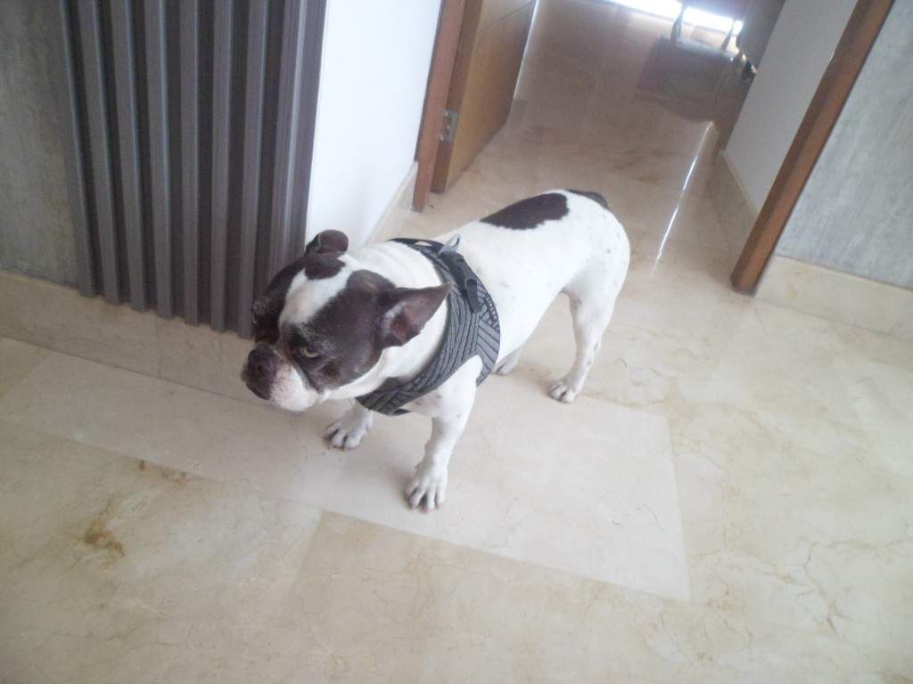
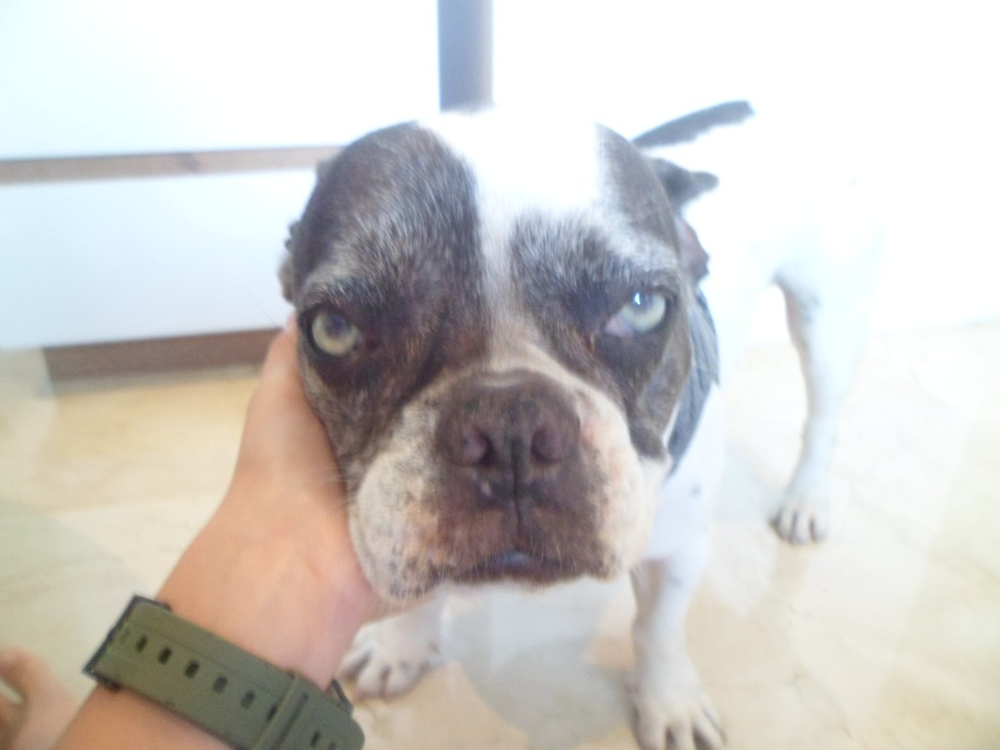
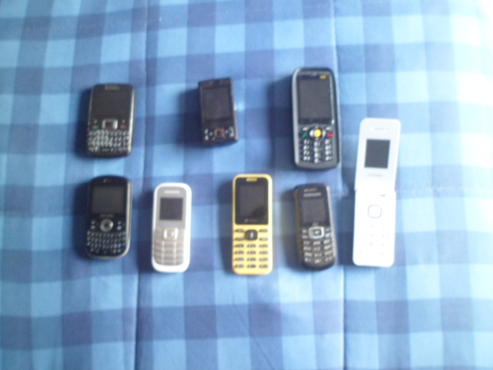
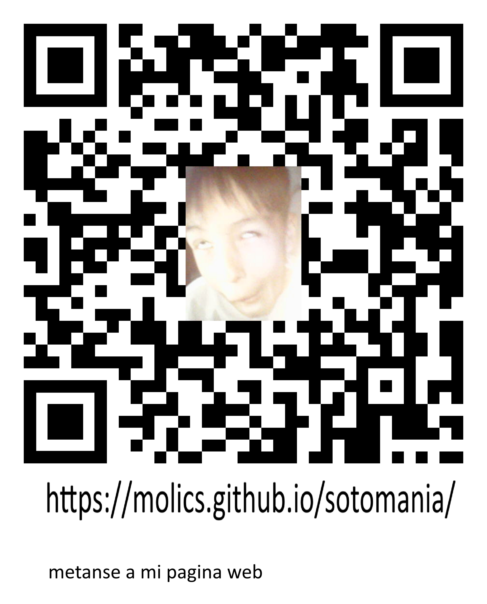

Bienvenidos a la Página Web de Soto
Mira a Molly


Ir a un lugar
mira mis celulares antiguos

descarga tobular!
windows (sin virus)
descarga aqui
descarga la app de sotomania!
android (sin virus)
descarga aquibuscar en duckduckgo
descarga jesa IA parcialmente offline
windows (sin virus)
descarga aquivolver al inicio